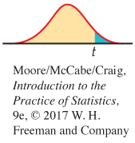
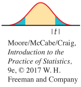

7.1 7.1 Inference for the Mean of a Population
408
When you complete this section, you will be able to:
• Distinguish the standard deviation of the sample mean from the standard error of the sample mean.
• Describe a level C confidence interval for the population mean in terms of an estimate and its margin of error.
• Construct a level C confidence interval for μ from a simple random sample (SRS) size n from a large population.
• Perform a one-sample t significance test and summarize the results.
• Identify when the matched pairs t procedures should be used instead of two-sample t procedures.
• Explain when t procedures can be useful for non-Normal data.
Both confidence intervals and tests of significance for the mean of a Normal population are based on the sample mean , which estimates the unknown . The sampling distribution of depends on . This fact causes no difficulty when is known. When is unknown, however, we must estimate even though we are primarily interested in .
In this section, we meet the sampling distribution of the standardized sample mean when we use the sample standard deviation s to estimate the population standard deviation . This sampling distribution is then used to produce both confidence intervals and significance tests about the mean .
The t distributions
Suppose that we have a simple random sample (SRS) of size n from a Normally distributed population with mean and standard deviation . The sample mean is then Normally distributed with mean and standard deviation . When is not known, we estimate it with the sample standard deviation s, and then we estimate the standard deviation of by . This quantity is called the standard error of the sample mean , and we denote it by .
sampling distribution of , p. 298
STANDARD ERROR
When the standard deviation of a statistic is estimated from the data, the result is called the standard error of the statistic. The standard error of the sample mean is
The term “standard error” is sometimes used for the actual standard deviation of a statistic. The estimated value is then called the “estimated standard error.” In this book, we will use the term “standard error” only when the standard deviation of a statistic is estimated from the data. The term has this meaning in the output of many statistical computer packages and in research reports that apply statistical methods.
409
In the previous chapter, the standardized sample mean, or one-sample z statistic,
is the basis for inference about when is known. This statistic has the standard Normal distribution N(0, 1). However, when we substitute the standard error for the standard deviation of , the statistic does not have a Normal distribution. It has a distribution that is new to us, called a t distribution.
THE t DISTRIBUTIONS
Suppose that an SRS of size n is drawn from an N(μ, σ) population. Then the one-sample t statistic
has the t distribution with degrees of freedom.
degrees of freedom, p. 40
A particular t distribution is specified by giving the degrees of freedom. We use to stand for the t distribution with k degrees of freedom. The degrees of freedom for this t statistic come from the sample standard deviation s in the denominator of t. We showed earlier that s has degrees of freedom. Thus, there is a different t distribution for each sample size. There are also other t statistics with different degrees of freedom, some of which we will meet later in this chapter.
The t distributions were discovered in 1908 by William S. Gosset. Gosset was a statistician employed by the Guinness brewing company, which prohibited its employees from publishing their discoveries that were brewing related. In this case, the company let him publish under the pen name “Student” using an example that did not involve brewing. The t distribution is often called “Student’s t” in his honor.
The density curves of the distributions are similar in shape to the standard Normal curve. That is, they are symmetric about 0 and are bell-shaped. Figure 7.1 compares the density curves of the standard Normal distribution and the t distributions with 5 and 10 degrees of freedom. The similarity in shape is apparent, as is the fact that the t distributions have more probability in the tails and less in the center.
In reference to the standardized sample mean, this greater spread is due to the extra variability caused by substituting the random variable s for the fixed parameter . In Figure 7.1, we see that as the degrees of freedom k increase, the density gets closer to the N(0, 1) curve. This reflects the fact that s will be closer to (more precise) as the sample size increases.
410
USE YOUR KNOWLEDGE
Question 7.1
7.1 One-bedroom apartment rates. You randomly choose 16 unfurnished one-bedroom apartments from a large number of advertisements in your local newspaper. You calculate that their mean monthly rent is $766 and their standard deviation is $180.
(a) What is the standard error of the mean?
(b) What are the degrees of freedom for a one-sample t statistic?
Question 7.2
7.2 Changing the sample size. Refer to the previous exercise. Suppose that instead of an SRS of 16, you sampled 25 advertisements.
(a) Would you expect the standard error of the mean to be larger or smaller in this case? Explain your answer.
(b) State why you can’t be certain that the standard error for this new SRS will be larger or smaller.
With the t distributions to help us, we can now analyze a sample from a Normal population with unknown or a large sample from a non-Normal population with unknown . Table D in the back of the book gives critical values t* for the t distributions. For convenience, we have labeled the table entries both by the value of p needed for significance tests and by the confidence level C (in percent) required for confidence intervals. The standard Normal critical values are in the bottom row of entries and labeled z*. As in the case of the Normal table (Table A), computer software often makes Table D unnecessary.
The one-sample t confidence interval
The one-sample t confidence interval is similar in both reasoning and computational detail to the z confidence interval of Chapter 6. There, the margin of error for the population mean was . When σ is unknown, we replace it with its estimate s and switch from z* to t*. This means that the margin of error for the population mean when we use the data to estimate σ is .
z confidence interval, p. 349
411
THE ONE-SAMPLE t CONFIDENCE INTERVAL
Suppose that an SRS of size n is drawn from a population having unknown mean μ. A level C confidence interval for μ is
where t* is the value for the t(n − 1) density curve with area C between −t* and t*. The quantity
is the margin of error. The confidence level is exactly C when the population distribution is Normal and is approximately correct for large n in other cases.
EXAMPLE 7.1
Watching traditional television. The Nielsen Company is a global information and media company and one of the leading suppliers of media information. In their annual Total Audience Report, the Nielsen Company states that adults age 18 to 24 years old average 18.5 hours per week watching traditional television.1 Does this average seem reasonable for college students? They tend to watch a lot of television, but given their unusual schedules, they may be more likely to binge-watch or stream episodes after they air. To investigate, let’s construct a 95% confidence interval for the average time (hours per week) spent watching traditional television among full-time U.S. college students. We draw the following SRS of size 8 from this population:
TVTIME
The sample mean is
and the standard deviation is
with degrees of freedom n − 1 = 7. The standard error is
From Table D, we find t* = 2.365. The 95% confidence interval is
= 14.5 ± (2.365)(5.252)
= 14.5 ± 12.421
= (2.08, 26.92)
| df = 7 | |||
| t* | 1.895 | 2.365 | 2.517 |
| C | 0.90 | 0.95 | 0.96 |
We are 95% confident that among U.S. college students the average time spent watching traditional television is between 2.1 and 26.9 hours per week.
412
In this example, we have given the actual interval hours per week as our answer. Sometimes, we prefer to report the mean and margin of error: the mean time is 14.5 hours per week with a margin of error of 12.4 hours per week. This is a large margin of error in relation to the estimated mean. In Section 7.3, we will return to this example and discuss determining an appropriate sample size for a desired margin of error such as ±5 hours a week.
Valid interpretation of the t confidence interval in Example 7.1 rests on assumptions that appear reasonable here. First, we assume that our random sample is an SRS from the U.S. population of college students. Second, we assume that the distribution of watching times is Normal. Figure 7.2 shows the Normal quantile plot. With only eight observations, this assumption cannot be effectively checked. In fact, because a watching time cannot be negative, we might expect this distribution to be skewed to the right. With these data, however, there are no extreme outliers to suggest a severe departure from Normality.
USE YOUR KNOWLEDGE
Question 7.3
7.3 More on apartment rents. Recall Exercise 7.1 (page 410). Construct a 95% confidence interval for the mean monthly rent of all advertised one-bedroom apartments.
Question 7.4
7.4 Finding critical t*-values. What critical value t* from Table D should be used to construct
(a) a 95% confidence interval when ?
(b) a 99% confidence interval when ?
(c) a 90% confidence interval when ?
The one-sample t test
Significance tests using the standard error are also very similar to the z test that we studied in the last chapter. We still carry out the four steps common to all significance tests, but because we use s in place of , we use a t distribution to find the P-value.
four steps of significance test, p. 370
413
THE ONE-SAMPLE t TEST
Suppose that an SRS of size n is drawn from a population having unknown mean μ. To test the hypothesis based on an SRS of size n, compute the one-sample t statistic
In terms of a random variable T having the t(n − 1) distribution, the P-value for a test of H0 against
Ha: μ > μ0 is P(T ≥ t) 
Ha: μ < μ0 is P(T ≤ t) 
Ha: μ ≠ μ0 is 2P(T ≥ |t|) 
These P-values are exact if the population distribution is Normal and are approximately correct for large n in other cases.
EXAMPLE 7.2
Significance test for watching traditional television. We want to test whether the average time that U.S. college students spend watching traditional television differs from the reported overall U.S. average of 18- to 24-year-olds at the 0.05 significance level. Specifically, we want to test
H0: μ = 18.5
Ha: μ ≠ 18.5
Recall that , , and . The test statistic is
=−0.762
TVTIME
This means that the sample mean is slightly more than 0.75 standard deviations below the null hypothesized value . Because the degrees of freedom are , this statistic has the distribution. Figure 7.3 shows that the P-value is , where T has the distribution. From Table D, we see that and .
| df = 7 | ||
| p | 0.25 | 0.20 |
| t* | 0.711 | 0.896 |
Therefore, we conclude that the P-value is between and . Software gives the exact value as . These data are compatible with a mean of 18.5 hours per week. Under , a difference this large or larger would occur about half the time simply due to chance. There is not enough evidence to reject the null hypothesis at the 0.05 level.
414
In this example, we tested the null hypothesis hours per week against the two-sided alternative hours per week because we had no prior suspicion that the average among college students would be larger or smaller. If we had suspected that the average would be smaller (for example, expected more streaming of shows), we would have used a one-sided test.
EXAMPLE 7.3
One-sided test for watching traditional television. For the problem described in the previous example, we want to test whether the U.S. college student average is smaller than the overall U.S. population average. Here we test
H0: μ = 18.5
versus
Ha: μ < 18.5
TVTIME
The t test statistic does not change: . As Figure 7.4 illustrates, however, the P-value is now , half of the value in the previous example. From Table D, we can determine that ; software gives the exact value as . Again, there is not enough evidence to reject the null hypothesis in favor of the alternative at the 0.05 significance level.
415

For the watching-television example, our conclusion did not depend on the choice between a one-sided and a two-sided test. Sometimes, however, this choice will affect the conclusion, so this choice needs to be made prior to analysis. If in doubt, always use a two-sided test. It is wrong to examine the data first and then decide to do a one-sided test in the direction indicated by the data. Often, a significant result for a two-sided test can be used to justify a one-sided test for another sample from the same population.
USE YOUR KNOWLEDGE
Question 7.5
7.5 Significance test using the t distribution. A test of a null hypothesis versus a two-sided alternative gives .
(a) The sample size is 23. Is the test result significant at the 5% level? Explain how you obtained your answer.
(b) The sample size is 9. Is the test result significant at the 5% level? Explain how you obtained your answer.
(c) Sketch the two distributions to illustrate your answers.
Question 7.6
7.6 Significance test for apartment rents. Refer to Exercise 7.1 (page 410). Does this SRS give good reason to believe that the mean rent of all advertised one-bedroom apartments is greater than $700? State the hypotheses, find the t statistic and its P-value, and state your conclusion.
For small data sets, such as the one in Example 7.1 (page 411), it is easy to perform the computations for confidence intervals and significance tests with an ordinary calculator. For larger data sets, however, we prefer to use software or a statistical calculator.
EXAMPLE 7.4
Stock portfolio diversification? An investor with a stock portfolio worth several hundred thousand dollars sued his broker and brokerage firm because lack of diversification in his portfolio led to poor performance. Table 7.1 gives the rates of return for the 39 months that the account was managed by the broker.2
STOCK
Figure 7.5 gives a histogram for these data, and Figure 7.6 gives the Normal quantile plot. There are no outliers and the distribution shows no strong skewness. We are reasonably confident that the distribution of is approximately Normal, and we proceed with our inference based on Normal theory.
| −8.36 | 1.63 | −2.27 | −2.93 | −2.70 | −2.93 | −9.14 | −2.64 |
| 6.82 | −2.35 | −3.58 | 6.13 | 7.00 | −15.25 | −8.66 | −1.03 |
| −9.16 | −1.25 | −1.22 | −10.27 | −5.11 | −0.80 | −1.44 | 1.28 |
| −0.65 | 4.34 | 12.22 | −7.21 | −0.09 | 7.34 | 5.04 | −7.24 |
| −2.14 | −1.01 | −1.41 | 12.03 | −2.56 | 4.33 | 2.35 |
416
The arbitration panel compared these returns with the average of the Standard & Poor’s 500 stock index for the same period. Consider the 39 monthly returns as a random sample from the population of monthly returns the brokerage firm would generate if it managed the account forever. Are these returns compatible with a population mean of %, the S&P 500 average? Our hypotheses are
H0: μ = 0.95
Ha: μ ≠ 0.95
Minitab and SPSS outputs appear in Figure 7.7. Output from other software will be similar.
Here is one way to report the conclusion: the mean monthly return on investment for this client’s account was %. This is significantly worse than the performance of the S&P 500 stock index for the same period (, df = 38, ).
417
The hypothesis test in Example 7.4 leads us to conclude that the mean return on the client’s account differs from that of the S&P 500 stock index. Now let’s assess the return on the client’s account with a confidence interval.
EXAMPLE 7.5
Estimating the mean monthly return. The mean monthly return on the client’s portfolio was %, and the standard deviation was %. Figure 7.7 gives Minitab output, and Figure 7.8 gives JMP and Excel outputs for a 95% confidence interval for the population mean . Note that Excel gives the margin of error next to the label “Confidence Level(95.0%)” rather than the actual confidence interval. We see that the 95% confidence interval is (−3.04, 0.84), or (from Excel) −1.0997 ± 1.9420.
Because the S&P 500 return, 0.95%, falls outside this interval, we know that differs significantly from 0.95% at the level. Example 7.4 gave the actual P-value as .
418
The confidence interval suggests that the broker’s management of this account had a long-term mean somewhere between a loss of 3.04% and a gain of 0.84% per month. We are interested, not in the actual mean, but in the difference between the performance of the client’s portfolio and that of the diversified S&P 500 stock index.
EXAMPLE 7.6
Estimating the difference from a standard. Following the analysis accepted by the arbitration panel, we are considering the S&P 500 monthly average return as a constant standard. (It is easy to envision scenarios where we would want to treat this type of quantity as random.) The difference between the mean of the investor’s account and the S&P 500 is %. In Example 7.5, we found that the 95% confidence interval for the investor’s account was (−3.04, 0.84).
To obtain the corresponding interval for the difference, subtract 0.95 from each of the endpoints. The resulting interval is (−3.04 − 0.95, 0.84 − 0.95), or (−3.99, −0.11). We conclude with 95% confidence that the underperformance was between −3.99 % and −0.11%. This interval is presented in the SPSS output of Figure 7.7. This estimate helps to set the compensation owed the investor.
The assumption that these 39 monthly returns represent an SRS from the population of monthly returns is certainly questionable. If the monthly S&P 500 returns were available, an alternative analysis would be to compare the average difference between each monthly return for this account and for the S&P 500. This method of analysis is discussed next.
USE YOUR KNOWLEDGE
Question 7.7
7.7 Using software to obtain a confidence interval. In Example 7.1 (page 411), we calculated the 95% confidence interval for the U.S. college student average of hours per month spent watching traditional television. Use software to compute this interval and verify that you obtain the same interval.
Question 7.8
7.8 Using software to perform a significance test. In Example 7.2 (413), we tested whether the average time that U.S. college students spend watching traditional television differs from the reported overall U.S. average of 18- to 24-year-olds at the 0.05 significance level. Use software to perform this test and obtain the exact P-value.
419
Matched pairs t procedures
The watching-television problem of Example 7.1 (411) concerns only a single population. We know that comparative studies are usually preferred to single-sample investigations because of the protection they offer against confounding. For that reason, inference about a parameter of a single distribution is less common than comparative inference.
confounding, p. 150
matched pairs design, p. 182
One common comparative design, however, makes use of single-sample procedures. In a matched pairs study, subjects are matched in pairs, and their outcomes are compared within each matched pair. For example, an experiment to compare two smartphone packages might use pairs of subjects who are the same age, sex, and income level. The experimenter could toss a coin to assign the two packages to the two subjects in each pair. The idea is that matched subjects are more similar than unmatched subjects, so comparing outcomes within each pair is more efficient (smaller σ).
Matched pairs are also common when randomization is not possible. For example, one situation calling for matched pairs is when observations are taken on the same subjects under two different conditions or before and after some intervention. Here is an example.
EXAMPLE 7.7
The effect of altering a software parameter. The MeasureMind® 3D MultiSensor metrology software is used by various companies to measure complex machine parts. As part of a technical review of the software, researchers at GE Healthcare discovered that unchecking one software option reduced measurement time by 10%. This time reduction would help the company’s productivity provided the option has no impact on the measurement outcome. To investigate this, the researchers measured 51 parts using the software both with and without this option checked.3 The experimenters tossed a fair coin to decide which measurement (with or without the option) to take first.
GEPARTS
Table 7.2 gives the measurements (in microns) for the first 20 parts. For analysis, we subtract the measurement with the option on from the measurement with the option off. These differences form a single sample and appear in the “Diff” columns for each part.
| Part | OptionOn | OptionOff | Diff | Part | OptionOn | OptionOff | Diff |
|---|---|---|---|---|---|---|---|
| 1 | 118.63 | 119.01 | 0.38 | 11 | 119.03 | 118.66 | −0.37 |
| 2 | 117.34 | 118.51 | 1.17 | 12 | 118.74 | 118.88 | 0.14 |
| 3 | 119.30 | 119.50 | 0.20 | 13 | 117.96 | 118.23 | 0.27 |
| 4 | 119.46 | 118.65 | −0.81 | 14 | 118.40 | 118.96 | 0.56 |
| 5 | 118.12 | 118.06 | −0.06 | 15 | 118.06 | 118.28 | 0.22 |
| 6 | 117.78 | 118.04 | 0.26 | 16 | 118.69 | 117.46 | −1.23 |
| 7 | 119.29 | 119.25 | −0.04 | 17 | 118.20 | 118.25 | 0.05 |
| 8 | 120.26 | 118.84 | −1.42 | 18 | 119.54 | 120.26 | 0.72 |
| 9 | 118.42 | 117.78 | −0.64 | 19 | 118.28 | 120.26 | 1.98 |
| 10 | 119.49 | 119.66 | 0.17 | 20 | 119.13 | 119.15 | 0.02 |
420
To assess whether there is a difference between the measurements with and without this option, we test
H0: μ = 0
Ha: μ ≠ 0
Here, μ is the mean difference for the entire population of parts. The null hypothesis says that there is no difference, and Ha says that there is a difference, but does not specify a direction.
The 51 differences have
= 0.0504 and s = 0.6943
Figure 7.9 shows a histogram of the differences. It is reasonably symmetric with no outliers, so we can comfortably use the one-sample t procedures. Remember to always check assumptions before proceeding with statistical inference.
The one-sample t statistic is
= 0.52
The P-value is found from the t(50) distribution. Remember that the degrees of freedom are 1 less than the sample size.
Table D shows that 0.52 lies to the left of the first column entry. This means the P-value is greater than 2(0.25) = 0.50. Software gives the exact value P = 0.6054. There is little evidence to suggest this option has an impact on the measurements. When reporting results, it is usual to omit the details of routine statistical procedures; our test would be reported in the form: “The difference in measurements was not statistically significant (t = 0.52, df = 50, P = 0.61).”

This result, however, does not fully address the goal of this study. A lack of statistical significance does not prove the null hypothesis is true. If that were the case, we would simply design poor experiments whenever we wanted to prove the null hypothesis. The more appropriate method of inference in this setting is to consider equivalence testingequivalence testing. With this approach, we try to prove that the mean difference is within some acceptable region around 0. We can actually perform this test using a confidence interval.
421
EXAMPLE 7.8
Are the two means equivalent? Suppose the GE Healthcare researchers state that a mean difference less than 0.20 micron is not important. To see if the data support a mean difference within 0.00 ± 0.20 micron, we construct a 90% confidence interval for the mean difference.
GEPARTS
The standard error is
| df = 50 | ||
|---|---|---|
| t* | 1.676 | 2.009 |
| C | 90% | 95% |
so the margin of error is
where the critical value t* = 1.676 comes from Table D using 50 degrees of freedom. The confidence interval is
= (−0.112, 0.2133)
This interval is not entirely within the 0.00 ± 0.20 micron region that the researchers state is not important. Thus, we cannot conclude at the 5% signficance level that the two means are equivalent. Because the observed mean difference is close to zero and well within the “equivalent region,” the company may want to consider a larger study to improve precision.
ONE SAMPLE TEST OF EQUIVALENCE
Suppose that an SRS of size n is drawn from a population having unknown mean μ. To test, at significance level α, if μ is within a range of equivalency to μ0, specified by the interval μ0 ± δ:
1. Compute the confidence interval with C = 1 − 2α.
2. Compare this interval with the range of equivalency.
If the confidence interval falls entirely within μ0 ± δ, conclude that μ is equivalent to μ0. If the confidence interval is outside the equivalency range or contains values both within and outside the range, conclude the μ is not equivalent to μ0.
One can also use statistical software to perform an equivalence test. Figure 7.10 shows the Minitab output for Example 7.8 It is common to visually present the test using the confidence interval and the user-specified upper and lower equivalence limits.
422
USE YOUR KNOWLEDGE
Question 7.9
7.9 Female wolf spider mate preferences. As part of a study on factors affecting mate choice, researchers exposed 18 premature female wolf spiders twice a day until maturity to iPod videos of three courting males with average size tufts. Once mature, each female spider was exposed to two videos, one involving a male with large tufts and the other involving a male with small tufts. The number of receptivity displays by the female toward each male was recorded.4 Explain why a paired t-test is appropriate in this setting.
Question 7.10
7.10 Oil-free deep fryer. Researchers at Purdue University are developing an oil-free deep fryer that will produce fried food faster, healthier, and safer than hot oil.5 As part of this development, they ask food experts to compare foods made with hot oil and their oil-free fryer. Consider the following table comparing the taste of hash browns. Each hash brown was rated on a 0 to 100 scale, with 100 being the highest rating. For each expert, a coin was tossed to see which type of hash brown was tasted first.
| Expert | |||||
|---|---|---|---|---|---|
| 1 | 2 | 3 | 4 | 5 | |
| Hot oil: | 78 | 84 | 62 | 73 | 63 |
| Oil free: | 75 | 85 | 67 | 75 | 66 |
Is there a difference in taste? State the appropriate hypotheses, and carry out a matched pairs t test using α = 0.05.
Question 7.11
7.11 95% confidence interval for the difference in taste. To a restaurant owner, the real question is how much difference there is in taste. Use the data to give a 95% confidence interval for the mean difference in taste scores between oil-free and hot-oil frying.
Robustness of the t procedures
423
The matched pairs t procedures and test of equivalence use one-sample t confidence intervals and significance tests for differences. They are, therefore, based on an assumption that the population of differences has a Normal distribution. For the histogram of the 51 differences in Example 7.7 shown in Figure 7.9 (420), the data appear to be slightly skewed. Does this slight non-Normality suggest that we should not use the t procedures for these data?
All inference procedures are based on some conditions, such as Normality. Procedures that are not strongly affected by violations of a condition are called robust. Robust procedures are very useful in statistical practice because they can be used over a wide range of conditions with good performance.
ROBUST PROCEDURES
A statistical inference procedure is called robust if the required probability calculations are insensitive to violations of the assumptions made.
The assumption that the population is Normal rules out outliers, so the presence of outliers shows that this assumption is not valid. The t procedures are not robust against outliers because and s are not resistant to outliers.
resistant measure, p. 30
Fortunately, the t procedures are quite robust against non-Normality of the population except in the case of outliers or strong skewness. Larger samples improve the accuracy of P-values and critical values from the t distributions when the population is not Normal. This is true for two reasons:
1. The sampling distribution of the sample mean from a large sample is close to Normal (that’s the central limit theorem). Normality of the individual observations is of little concern when the sample is large.
2. As the sample size n grows, the sample standard deviation s will be an accurate estimate of σ whether or not the population has a Normal distribution. This fact is closely related to the law of large numbers.
central limit theorem, p. 298
law of large numbers, p. 250

To convince yourself of this fact, use the t Statistic applet to study the sampling distribution of the one-sample t statistic. From one of three population distributions, 10,000 SRSs of a user-specified sample size n are generated, and a histogram of the t statistics is constructed. You have the option to compare this estimated sampling distribution with the t(n − 1) distribution. When the population distribution is Normal, the sampling distribution of the t statistic is always t distributed. For the other two population distributions, you should see that as n increases, the histogram of t statistics looks more like the t(n − 1) distribution.

To assess whether the t procedures can be used in practice, a Normal quantile plot, stemplot, or boxplot is a good tool to check for skewness and outliers. For most purposes, the one-sample t procedures can be safely used when n ≥ 15 unless an outlier or clearly marked skewness is present. Except in the case of small samples, the assumption that the data are an SRS from the population of interest is more crucial than the assumption that the population distribution is Normal. Here are practical guidelines for inference on a single mean:6
424
• Sample size less than 15: Use t procedures if the data are close to Normal. If the data are clearly non-Normal or if outliers are present, do not use t.
• Sample size at least 15 and less than 40: The t procedures can be used except in the presence of outliers or strong skewness.
• Large samples: The t procedures can be used even for clearly skewed distributions when the sample is large, roughly n ≥ 40.
For the measurement data in Example 7.7 (page 419), there is only slight skewness and no outliers. With n = 51 observations, we should feel comfortable that the t procedures give approximately correct results.
USE YOUR KNOWLEDGE
Question 7.12
7.12 t procedures for time to start a business? Consider the data from Exercise 1.43 (page 29) but with Suriname removed. Would you be comfortable applying the t procedures in this case? Explain your answer.
Question 7.13
7.13 t procedures for ticket prices? Consider the data on StubHub! ticket prices presented in Figure 1.32 (page 69). Would you be comfortable applying the t procedures in this case? In explaining your answer, recall that these t procedures focus on the mean μ.
BEYOND THE BASICS
The Bootstrap
Confidence intervals are based on sampling distributions. In this section, we have used the fact that the sampling distribution of is when the data are an SRS from an N(μ, σ) population. If the data are not Normal, the central limit theorem tells us that this sampling distribution is still a reasonable approximation as long as the distribution of the data is not strongly skewed and there are no outliers. Even a fair amount of skewness can be tolerated when the sample size is large.
What if the population does not appear to be Normal and we have only a small sample? Then we do not know what the sampling distribution of looks like. The bootstrapbootstrap is a procedure for approximating sampling distributions when theory cannot tell us their shape.7
The basic idea is to act as if our sample were the population. We take many samples from it. Each of these is called a resampleresample. We calculate the mean for each resample. We get different results from different resamples because we sample with replacement. Thus, an observation in the original sample can appear more than once in a resample. We treat the resulting distribution of s as if it were the sampling distribution and use it to perform inference. If we want a 95% confidence interval, for example, we could use the middle 95% of this resample distribution.
425
EXAMPLE 7.9
A bootstrap confidence interval. Consider the eight time measurements (in hours per week) spent watching traditional television in Example 7.1 (page 411):
3.0 16.5 10.5 40.5 5.5 33.5 0.0 6.5
TVTIME
We defended the use of the one-sided t confidence interval for an earlier analysis. Let’s now compare those results with the confidence interval constructed using the bootstrap.
We decide to collect the ’s from 1000 resamples of size n = 8. We use software to do this very quickly. One resample was
5.5 6.5 5.5 40.5 16.5 33.5 10.5 6.5
with . The middle 95% of our 1000 ’s runs from 7.0 to 25.0. We repeat the procedure and get the interval (6.6, 25.1).
The two bootstrap intervals are relatively close to each other and are more narrow than the one-sample t confidence interval (2.1, 26.9). This suggests that the standard t interval is likely a little wider than it needs to be for this data set.
The bootstrap is practical only when you can use a computer to take 1000 or more resamples quickly. It is an example of how the use of fast and easy computing is changing the way we do statistics. More details about the bootstrap can be found in Chapter 16.